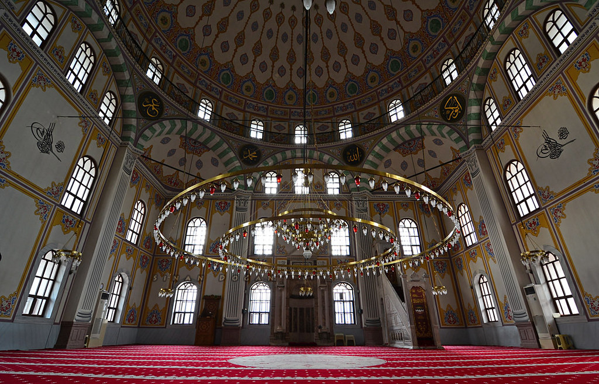

Bolu Kültürel Yerler
Yeşil Bolu'nun Kültürel Mirası
Müzeler

Bolu Müzesi
Bölgenin zengin tarihini yansıtan, önemli arkeolojik eserlerin sergilendiği müze.

Seben Müzesi
Yöresel kültürü ve tarihi yansıtan etnografik eserler.
Tarihi Yapılar

Akçakoca Kalesi
Bizans döneminden kalma tarihi kale ve deniz manzarası.
Gölcük Tabiat Parkı
Doğal güzelliğiyle dikkat çeken krater gölü ve çevresi.
Abant Gölü
Doğal güzelliği ve çevresindeki yürüyüş parkurlarıyla ünlü göl.
Tarihi Camiler
Ulu Cami
Selçuklu döneminden kalma, şehrin en eski camisi.

Yıldırım Camii
Osmanlı döneminden kalma tarihi cami.